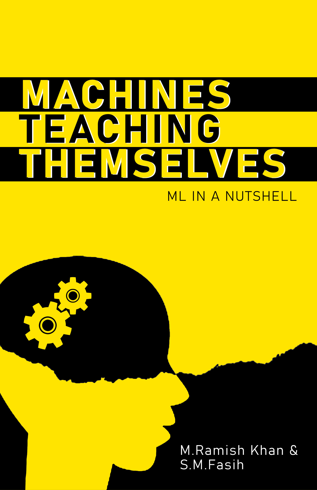

The study of the project aims to develop a product that demonstrate the potential of AI-based IoT devices in the field of agriculture, particularly in pest detection and monitoring, and contributes to the development of optimized algorithms for efficient and cost-effective embedded systems.

This book is compiled with the hope that it gives a spark in the heart of young ones, keeping that in mind human brain analogy has been used.
This book gives a basic idea behind machine learning, it compiles some of the root algorithms of ML and gives an idea about how machines begin to think for themselves.

This open-source project invites collaboration and contributions from the community to enhance the Y-Net architecture. Y-Net enables the parallel execution of convolutional neural networks (CNNs) on resource-constrained systems, addressing the challenges of limited computational resources.